00:00:01
今天我們講土木堡之變。土木堡之變發生在明朝的正統年間，正統年間皇帝是明英宗朱祁鎮。朱祁鎮是明朝的第六個皇帝，我們上期講的是明朝的第四個皇帝仁宗和第五個皇帝宣宗。仁宗和宣宗能被並稱為『仁宣之治』，確實他們統治期間的政治比較清明，但是還有一個很重要的原因就是從他們後面這個皇帝朱祁鎮開始，明朝就走下坡路了。所以相比較來說，仁宣之治就顯得比較難得。明朝由盛轉衰的第一個轉折點就是土木堡之變。土木堡之變對明朝的影響非常大，首先明朝數十萬最精銳的部隊，明朝的整個中樞系統上百名文官武將在這場戰爭中都陣亡了，明英宗朱祁鎮本人也被俘虜了。這場戰役之後，明朝整個國家的戰略就從外向的進攻型轉向內向的保守型。所以土木堡之變一般被認為是明朝由盛轉衰的第一個轉折點。
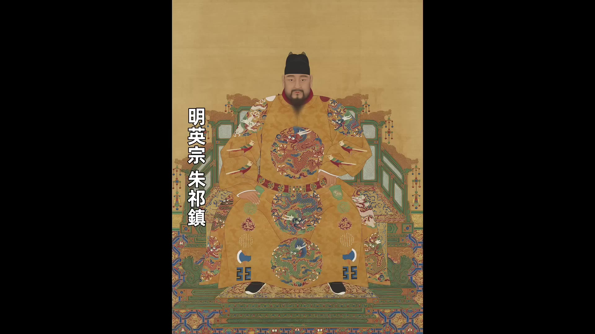
但這麼重要的一場戰役，我們在看正史記載的時候卻感覺所有的記載好像都有點語焉不詳。無論是明朝人自己寫的《明英宗實錄》，還是清朝人寫的《明史》，對這段歷史的記錄都有點含糊不清。你要是乍一看沒問題，前因後果也都有，但是不能仔細琢磨，越仔細琢磨越覺得有問題。所以這麼多年來研究這段歷史的專家，有的就完全按照正史來講，一些也有的綜合考證當時的親歷者的記錄再加上自己的邏輯分析來講。這些親歷者的記錄有時候還相互矛盾。我們今天也是綜合看所有的記錄再加上自己的邏輯判斷，嘗試把這段歷史給大家還原一下。
在講土木堡之變之前，我們先稍微講一下明英宗朱祁鎮登基和太監王振掌權的情況。朱祁鎮9歲登基，登基的時候還是個小孩不能親政。
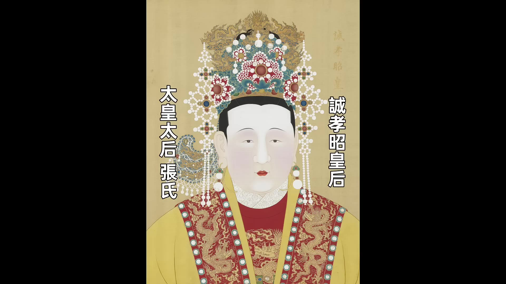
他登基之後是由他的母親張氏輔政，據說太皇太后張氏很賢明。
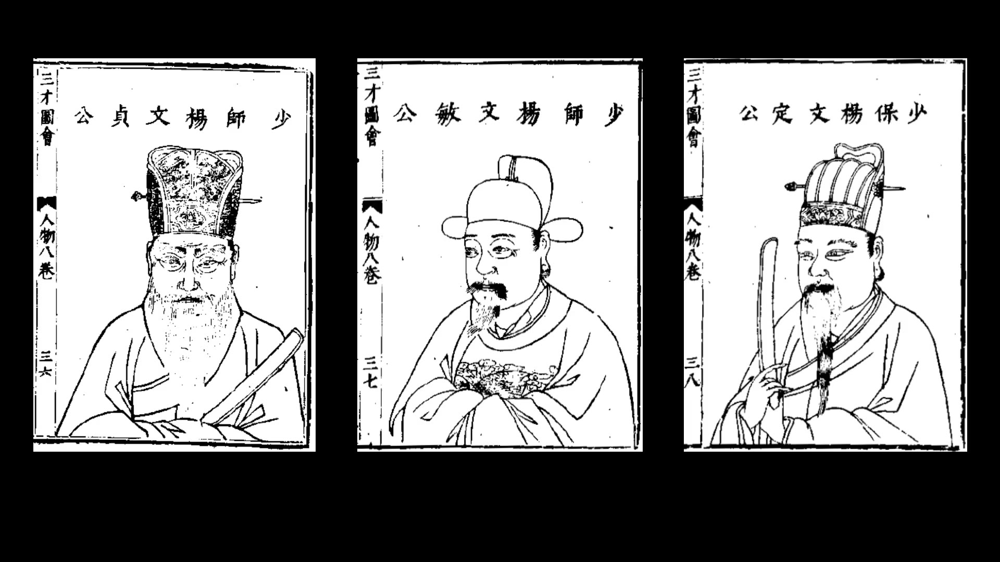
當時朝堂上還有三楊內閣，三楊是朝廷元老，他們盡心盡力的輔佐皇帝。所以朱祁鎮沒親政之前朝堂上一切政務都是井井有條。等到朱祁鎮長大成人他自己親政了，朝堂上的形勢就發生變化了，主要的變化是太監王振登上政治舞台，勾結外臣干擾政治。
簡單介紹一下王振。
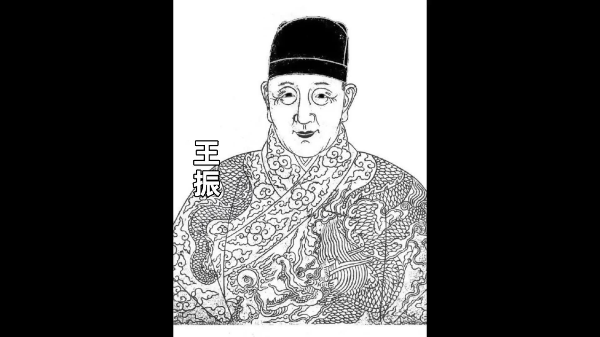
王振入宮的時候跟一般大監就不一樣，王振不是而且還有正式的職務，職務是學官。王振入宮當太監是他很有野心想出人頭地，他又覺得考科舉太難，他想走捷徑，他走的這條捷徑就是入宮當太監。當時是宣德年間，宣德年間朱瞻基設立內書堂，想要培養有知識有文化的太監。王振就看到機會，下決心入宮。他入宮之後因為他本身就有讀書的基礎，所以跟其他太監相比較，進宮之後時間不長他就得到宣宗的賞識，宣宗讓他進入東宮專門侍奉當時的太子朱祁鎮。
王振服侍朱祁鎮是在朱祁鎮很小的時候，大概三四歲的時候。王振因為當過學官，他很有教育的經驗，他對小朱祁鎮就又貼心又嚴厲。朱祁鎮對他產生了很強的依賴心理，朱祁鎮甚至都不是叫他的名字，而是稱呼他為先生。朱祁鎮登基之後立刻提拔王振為司禮監秉筆太監，然後讓他掌管司禮監。王振屬於是一步登天，變成了後宮裡面權位最高的太監。我們前面講仁宣之治的時候說過，同禮監有代皇帝批紅的權力。王振掌管司禮監，皇帝又對他很依賴，所以王振很容易就掌控了批紅權。王振掌控批紅權之後，他在宮內的地位就牢固了，然後他開始培養自己在外廷的勢力。
王振培養外廷勢力主要是拉攏外廷的文官武將，當時大臣都知道王振深受皇帝寵信，所以很多大臣主動投到王振名下。王振就借機籠絡，比如說當時守衛居庸關的將領叫紀廣，這個紀廣就主動向王振靠攏，對王振大獻殷勤。王振在皇帝身邊說紀廣的好話，結果紀廣得到越級提拔。王振一開始還不敢大規模的勾結外臣，因為當時太皇太后還在，三楊閣老還在。到正統七年太皇太后去世，王振的膽子就變大了。三楊閣老這時候年紀也大了，也被他逼的退位。王振就逐漸掌握了朝廷內外的主要話語權。當時朝廷上的文官集團大概可以分為兩派，一派是主動投入到王振門下的，還有一派是反對王振的，但是反對王振的勢力相對來說更弱。
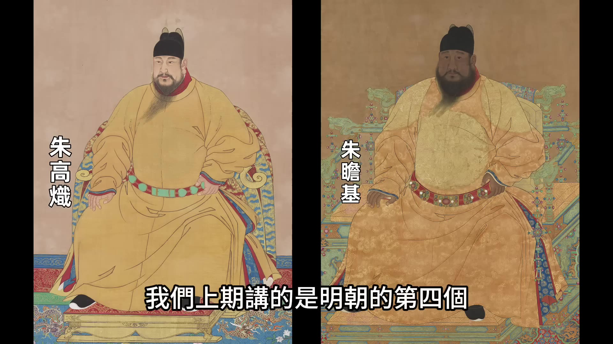
00:05:02
王振能掌權最主要的原因還是明英宗朱祁鎮對他的信任甚至說是對他的依賴這就是朱祁鎮親政之後朝堂上發生的變化然後到正統十四年發生了土木堡之變土木堡之變的過程我們先簡單敘述一下就是蒙古的一個部落叫瓦剌瓦剌發展壯大之後來入侵大明大明皇帝朱祁鎮御駕親征結果在土木堡這個地方被敵軍打得大敗明朝的精銳部隊損失慘重眾多的文武官員都戰死連皇帝朱祁鎮自己都被瓦剌給抓走了這就是土木堡之變接下來我們就從幾個關鍵的問題入手盡量還原一下土木堡之變的過程首先第一個問題是瓦剌為什麼要打大明這場戰爭爆發的原因是什麼
我們先說一下瓦剌是誰朱元璋建立大明的時候元朝並沒有終結元朝是退到了漠北學界一般把他們這時候的政權稱為北元北元退到漠北之後原有的中央機構瓦解基本上就回到了原始的蒙古部落的狀態
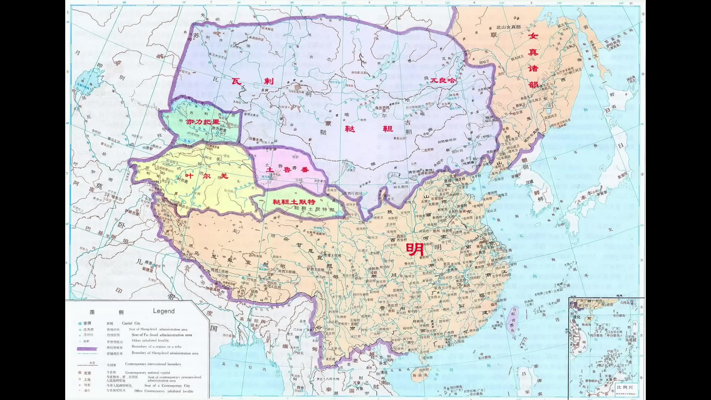
當時有三個比較大的部落在西邊的部落叫瓦剌在中間的部落叫韃靼在東邊的部落叫元良哈元良哈的人數少一點一開始也比較親明朝明朝給他們設了三個衛所四朵顏三衛在明朝初期蒙古的三個大部落裡面韃靼的實力最強他們也自稱是北元的正統朱棣五征漠北他主要打的也是韃胆當時明朝對蒙古的各個部落有一個「分而治之」的策略就是拉一個打一個讓蒙古各個部落發生內鬥明朝在最初期認為韃靼的實力最強他們就主要打擊韃靼然後拉攏和扶植瓦剌這樣韃靼被打下去了瓦剌的實力就逐漸變強了瓦剌也是連續出了三代優秀的領導人第一代領導人是馬哈木馬哈木利用朱棣打擊韃靼的機會主動向明朝稱臣他向明朝稱臣就可以加入到明朝的朝貢體系通過向明朝朝貢他獲得了大量的糧食和封賞然後他用封賞購買鐵器這樣他就迅速積累了戰鬥力瓦剌的第二代領導人是脫權在第一代積累戰功之後脫懽統一了瓦剌的各個部落然後向東擊敗了韃靼他擊敗韃靼之後由於他不是黄金家族的後裔所以他自己沒做大汗他是冊立了黃金家族的後裔脫脫不花做大汗他自己做太師實際上他就是挾天子以令諸侯脫脫不花只是個傀儡大汗他才是所有權力的掌控者第三代領導人是也先在也先時期瓦剌的實力達到巔峰他們不僅完全統一了蒙古草原還把勢力範圍向東擴張到遼東
向西觸及到中亞這時候明朝已經是正統年間跟明朝打這場土木堡之戰的就是也先這是瓦剌的崛起過程然後我們說瓦剌為什麼會來打大明根據官方正史的說法說的是由於朝貢貿易引發的糾紛我們前面說了說明朝為了拉攏瓦剌對瓦剌的朝貢放寬政策具體是怎麼放寬的政策呢就是明朝的朝貢制度有
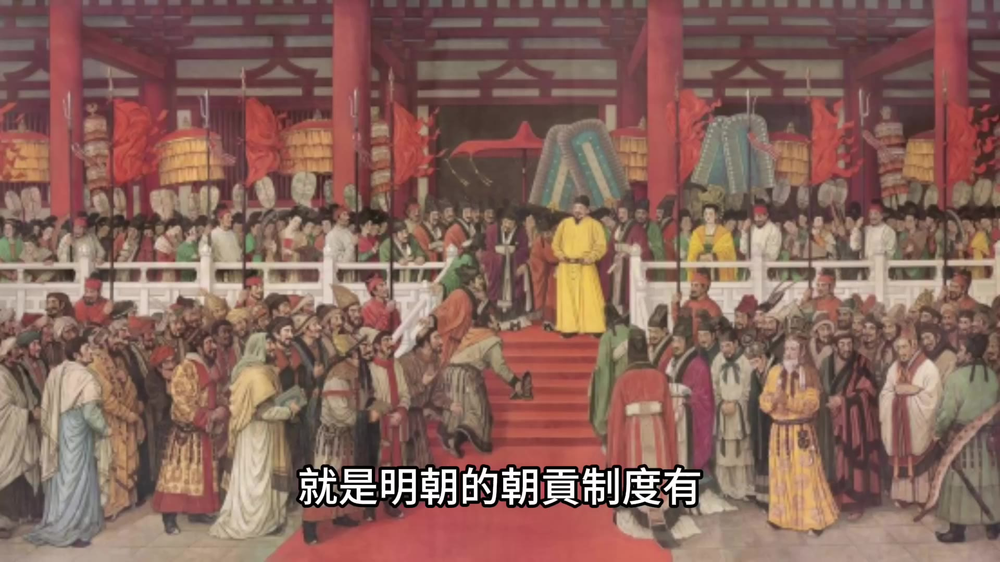
一個准則叫「厚往薄來」厚往薄來薄是少「薄來」就是上供的東西少「厚往」厚是多『厚往」就是返還給你的東西多所以來明朝朝貢的國家都是賺錢的明朝是虧錢的各個小國來朝員的時候明朝會給予非常豐厚的獎賞這個獎賞的數量跟你朝貢使團的人數有關首先你所有來的人明朝都會給你報銷路費包括你的伙食費、交通費、住宿費都報銷明朝回賜的物品是按人頭算的就是你來多少人我給你回賜的物品就是多少份所以每個朝貢使團來的人數跟明朝的財政支出是直接掛鉤的來的人越多明朝要花的錢就越多所以明朝對每個朝貢國都有明確的人數限制其實不光有人數限制他們來的路線都有控制明朝給瓦剌最開始定的人數是50人後來明朝是為了拉攏瓦剌就給他們放寬了政策具體放寬的政策就是破例可以讓他們增加朝貢的人數增加朝貢人數就等於是在給瓦剌發錢這種破例就讓瓦剌看到了發財的機會瓦剌就越派人越多瓦剌從最開始的50人漲到200多人漲到500多人到正統十四年土木堡之變發生之前瓦剌來朝貢的實際人數已經達到了2,000人而且瓦剌還虚報他們實際上來了2,000人報的時候卻報了3,000人他們來這麼多人實際上對明朝有一種勒索的性質他們明知道明朝不想打仗自己多派人就是想從明朝得到更多的經濟好處
在《明史》裡面記載才容忍瓦剌這麼做
00:10:01
瓦剌來這麼多人對明朝來說是一筆沈重的財政負擔，我們算算，如果按一個朝貢國限額50人來算，2,000人等於是40個朝貢國給瓦剌，他一個國家發的錢等於是給40個國家發錢，所以明朝的財政負擔太大，實在有點承受不住了，他就要控制這部分支出。到正統十四年瓦剌使團來朝貢的時候，王振就對瓦剌嚴格控制。王振先是嚴格按照來的人數發放賞賜，你瓦剌不是虚報嗎？我就一個一個人去查，實際只到2,000人，我就只按照2,000人來發。瓦剌使團以前肯定也有虚報的情況，但是明朝都是睜一眼閉一眼沒嚴查，這次王振是絲毫沒留情面，嚴格按照實到人數發賞賜。王振嚴查瓦剌帶來的貢品，瓦剌來上貢帶來的主要是馬匹，王振發現他們以次充好，以次馬充好馬，所以只給了以前1/5的賞賜。這樣也先就非常生氣，也先認為自己既丟了面子又丟了裡子，丟面子是你對我嚴查絲毫不給我留情面，丟裡子是明朝給的賞賜變少了，這是一大筆經濟虧空，所以也先發兵大規模入侵明朝。這是正史裡面記載的戰爭爆發的原因，這裡面說的主要原因是在一開始瓦剌增加使團人數的時候，王振為了粉飾太平，對瓦剌的態度是以籠絡為主，對方要什麼他就給什麼，導致瓦剌的胃口不斷膨脹，要的越來越多，到明朝經濟壓力實在承受不住，突然間削減給瓦剌的賞賜，這種極端的轉變激怒了也先，導致戰爭爆發。
但是這個事件呀，我們說如果作為戰爭的導火索還可以，不應該說作為戰爭爆發的主要原因，戰爭爆發的主要原因還是因為瓦剌部落發展壯大到正統十四年的時候。
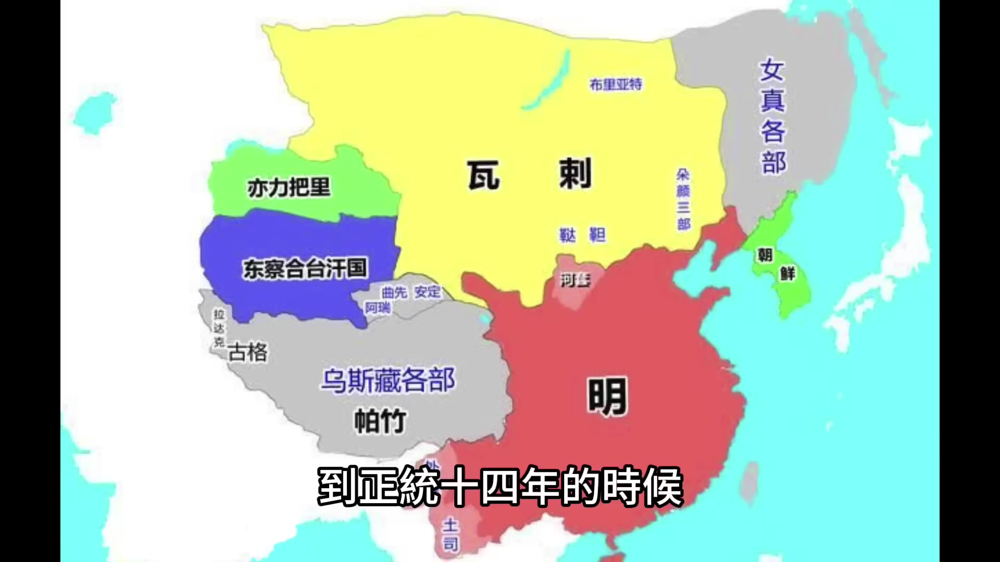
*這是一張明朝時期的中國地圖，標注了多個勢力和地區的名稱。*也先已經完全統一了蒙古草原，他對中原的明朝有明顯的野心。為什麼說他對明朝已經顯示出野心？因為在這之前，在正統十四年之前，也先已經做了幾件事情。
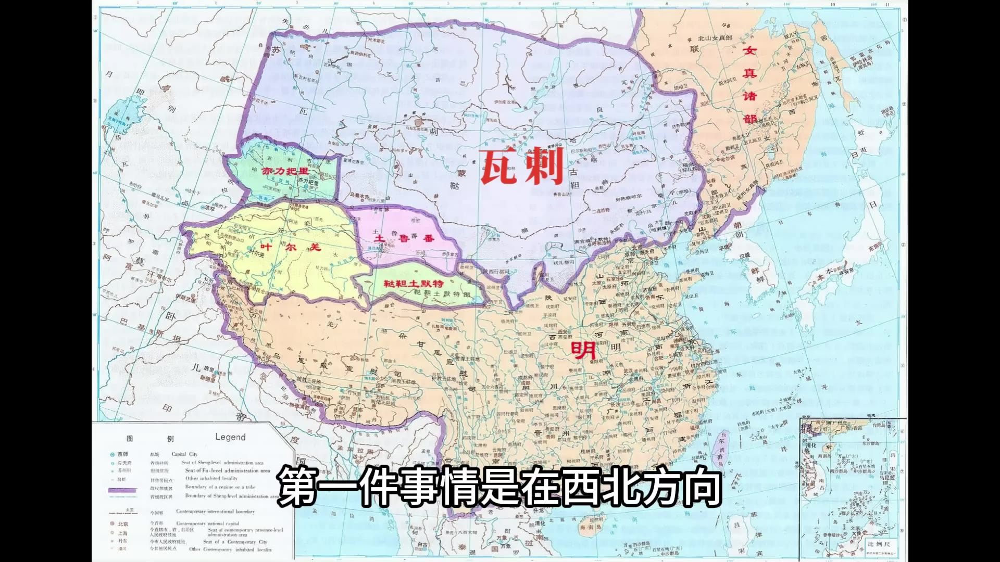
第一件事情是在西北方向，他進攻並且控制了哈密衛，哈密衛是明朝在最西端的衛所，是連接中原和西域的咽喉，控制了哈密衛就等於瓦解了明朝在西北方向的藩屏體系。第二件事情是在東北方向，瓦剌通過武力試圖逼迫女真的各個部落順從自己。當時明朝在遼東地區設置了很多衛所，比如說建州衛、海西衛等等，明朝設這些衛所一方面是為了控制女真部落，另外一方面也是通過女真部落來限制蒙古部落的發展。瓦剌發展壯大之後，他對東北這些女真部落既打壓又拉攏，也先自稱他是繼承了元朝的正統，要求女真各個部落念及舊恩配合他們的軍事行動。這樣通過在西北方向的軍事行動和東北方向的軍事行動，瓦剌對明朝已經形成了一個扇形的包圍，這些都是在正統十四年之前完成的。正統十四年發生朝貢糾紛的時候，也先早就做好了對大明的戰略佈局，所以我們說朝貢引發的糾紛可以算作是一個導火索，但是戰爭爆發的實際原因還是瓦剌已經發展壯大，對進犯大明有明顯的野心。
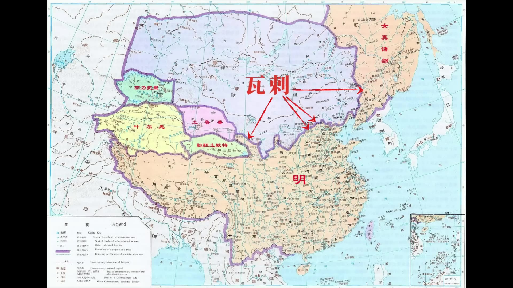
也先進攻大明是在四個方向同時進攻，東路是進攻遼東方向，西路是進攻甘肅方向，中路是進攻宣府方向，最後一路是也先親自率領進攻大同方向。面對瓦剌的大舉進犯，明英宗朱祁鎮決定御駕親征。朱祁鎮為什麼親征？根據史料記載，是朱祁鎮聽從了太監王振的慫恿，朝廷的文官武將等大臣多次勸阻說不要親征，但是朱祁鎮都不聽，朱祁鎮只聽王振一個人的，最後決定要親征，然後釀成了悲劇。至於王振為什麼要勸朱祁鎮親征，有兩種說法，一種說法是說王振是為了炫耀權勢，王振的老家是山西蔚州，蔚州屬於大同府，他率領大軍去大同打仗正好可以路過蔚州，他能在家鄉光耀門楣，這是第一種說法。第二種說法是說王振是為了增加個人威望，他現在雖然已經掌控了朝政大權，但是文官集團還是能跟他對抗，他認為自己差的是軍功，要是他能夠輔助皇帝御駕親征並且獲勝，他在資歷上和威望上就完全可以壓過文官集團。這兩種說法呀都是說王振是為了自己的個人私慾慫恿皇帝親征，但是我們仔細想想這個事，感覺還是有點問題，是不是王振為了自己的私慾去慫恿皇帝親征，就算英宗一開始看不出來王振是為了私慾，但是經過那麼多大臣的上奏反對，英宗是不是也應該能看出來了，當時的兵部尚書鄺埜、吏部尚書王直等大臣都力勸英宗不要親征，這些大臣的力勸都是英宗自己給壓下去的，王振就算能獲得英宗的信任，英宗對他比較依賴，但是他也沒有達到能替英宗做決定的程度。
00:15:01
尤其是御駕親征這麼大的事決定肯定是英宗自己做的我們想是不是還有一種可能就是英宗他自己想要御駕親征英宗想效仿他的祖先建立武功王振揣摩到了主子的心理王振是最有可能揣摩明白英宗心理的人他揣摩到主子想親征的心理替主子把話說出來甚至他以這個跟文官集團對抗表達對皇帝的忠心最終的結果是在王振的堅持下英宗達成了親征的心願雖然文官集團反對但是王振贏了這一局我們這個說法不是單純的猜測在《明英宗實錄》裡面有一些蛛絲馬跡可尋英宗實錄是以月為單位每個月是一卷然後一卷裡面記錄的是這個月每天發生的什麼事情我們就去查查從瓦剌發動戰爭到明英宗決定御駕親征這中間發生了什麼我們看在正統十四年6月17號這—天明朝往大同方向派出了一個將領派的是西寧侯宋瑛派的原因是朝廷探聽到了瓦剌要密謀犯大同宋瑛被任命為大同司馬他的任務是在大同做防禦部署我們看到這個說明明朝的信息很准瓦剌的主力部隊目標確實是大同然後在6月30號的時候左順門開晚朝開晚朝就是皇帝召集大臣們加班議事皇帝召集大臣加班商議的肯定是重要的緊急的事這次加班大家討論的結果是要派兵增援大同和宣府一共往這兩個地方派出了4萬5千人其中3萬兵力到大同1萬5千兵力到宣府這說明明朝已經掌握了
瓦剌部隊的入侵方向然後在7月11號也先率領瓦剌部隊進攻大同大同右參將吳浩率領明軍在大同外部的貓兒莊一帶跟瓦剌軍交戰結果明軍戰敗吳浩戰死也先進攻大同的同時瓦剌的另外一支部隊進攻宣府宣府雖然守住了但是也被打得很慘只能憑城固守7月12號消息傳回北京明英宗就是在12號這天做的決定要御駕親征我們看這個時間線和過程明朝知道瓦剌大軍要來襲擊並且已經增派了兵將去防守大同和宣府結果還是打輸了轉折點就在7月11號的這次失敗可以想象在做了充分的準備之後還是打了敗仗打了敗仗之後明英宗明顯生氣了他認為你們不行我親自來英宗也想像他太爺爺朱棣那樣御駕親征英宗想御駕親征14號在上朝的時候大臣們集體勸過他一次勸他不要去結果英宗不聽決定要去出發時間定在16號所以有人說英宗御駕親征是只給了兩天準備時間有人說給了四天準備時間其實這兩種說法都對說給四天的是從12號開始算因為12號英宗就說了要御駕親征說給兩天的是從14號開始算14號大臣們勸英宗被駁回了所以從14號算就是兩天總之不管是兩天還是四天吧反正準備的時間很短出發的很倉促大軍只帶了一個月的糧草就出發了英宗御駕親征不僅帶上了大明最精銳的部隊文臣武將都帶上了為什麼要帶這麼多文臣按理說出征打仗帶武將是應該的
為什麼會帶文臣因為明成祖朱棣親征的時候就帶了一整套文臣班底因為朱棣總親征他帶文官是為了可以流動辦公在親征的時候也可以辦理政務所以英宗出征他也學他太爺爺把文官集團都帶上了至於明英宗帶的軍隊數量是多少有說是50萬的大部分專家考證認可的數字應該是在20萬到25萬之間不管具體數字是多少這批部隊是明朝最精銳的部隊這是肯定毫無疑問的7月26號這天英宗帶著大明的中樞系統帶著大明的精銳部隊浩浩蕩蕩御駕親征出發了
我們看英宗的行軍路線
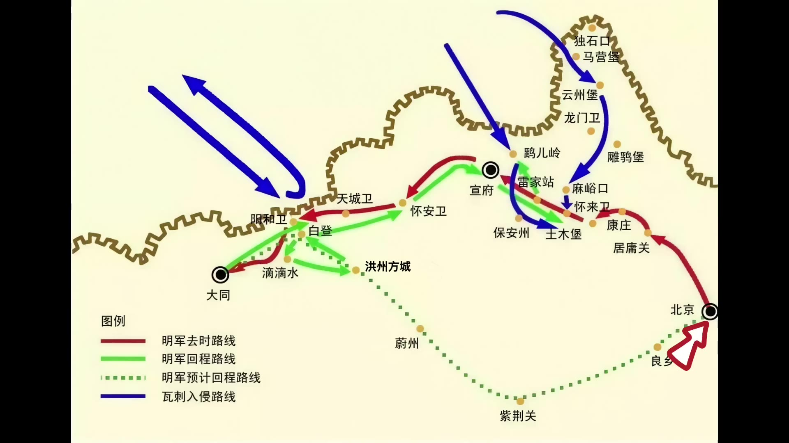
然後到懷來從宣府到大同他是在找敵人“他帶大軍出來是找敵人打仗的英宗先到宣府.又走到大同開始往回返
為什麼往回返《明英宗實錄》裡面記載的是到大同之後鎮守大同的太監郭敬密告王振說敵人在北面佈置了埋伏再往北走就中敵人的好計了王振聽到之後感到恐懼於是就班師回朝了這裡我們就分析一下英宗是不是聽了郭敬的話害怕了就回去了自從英宗御駕親征出了北京之後一直都有大臣在勸英宗回去我們從記錄裡面能看到
.英宗大軍是7月16號從北京出發的
00:20:00
7月19日過居庸關時，瓦剌入侵路線與明軍進退動向形成對比。英宗在7月23日抵達宣府時，欽天監主管彭德清根據天象勸阻，但英宗仍未聽從。此後一路行駛，群臣屢次勸諫均遭拒絕。雖天氣惡劣，但史料顯示英宗後退並非因天氣所致。
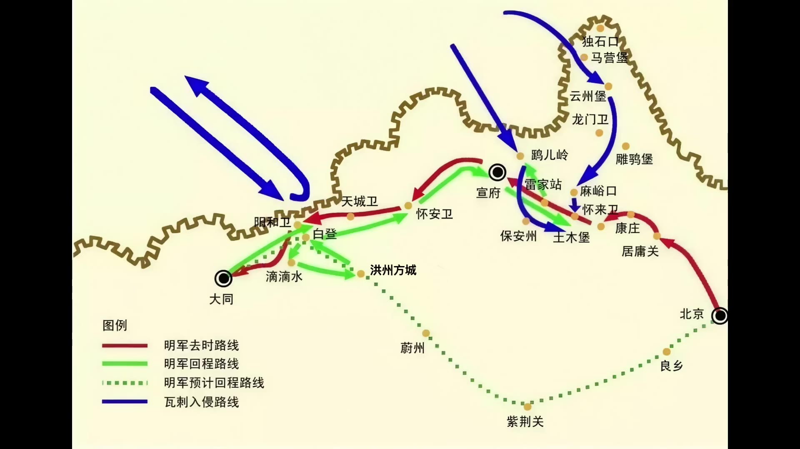
關於英宗回撤原因，史料記載與推測存在多重可能性。首先，7月15日陽和衛戰役已造成重大傷亡，此戰發生在英宗出發前一日（7月16日從北京啟程）。瓦剌軍隊由西寧侯宋瑛、武進伯朱冕率領，而6月30日的戰況可能影響了後續判斷。太監郭敬親歷陽和衛戰場，其對英宗的報告或加深了英宗對戰況的恐懼。此外，英宗帶領的糧草僅夠支應一個月，7月16日出發至8月1日抵達大同剛好耗盡，此後返程亦需相同時間，顯示其原定目的地可能僅至大同。
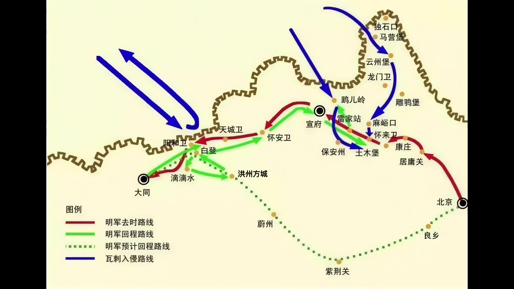
從大同返回北京的路線選擇亦引發後世質疑。史書記載英宗選擇繞道行軍，先沿北線行進至良鄉，再轉向南線後又折返北線，此迂迴路線導致行軍時間延長。此種行軍策略與英宗最終在土木堡遭圍困的結果形成強烈對比，成為後世詮釋此役關鍵節點的焦點。
00:25:00
最後導致在土木堡被敵人給追上，所以回城的路線的選擇是要為土木堡之戰負主要責任。這個責任誰來負？按照史料裡面的記載，是王振來負的。記載根據《明英宗實錄》是王振主導選擇的回程路線。
要是走南線，正好可以路過蔚州。路過蔚州，瓦剌入侵路线在家鄉炫耀。最後就走出來了這條先南後北的路線。史書裡面的這個記載呀，是把責任都推到王振頭上。我們不是想給王振洗白，但是他這個說法看起來實在是有一些疑點重重。首先，王振因為要衣錦還鄉，選擇走南線就不太正常。說走南線是為了更安全反倒更合理一點。
但是英宗還不是一開始就往南走，才轉向走的南線。所以我們可以推測，可能是英宗在陽和衛看到了什麼或者聽到了什麼，增加了他的恐懼，導致他選擇了走更安全的南線。那陽和衛有什麼？陽和衛有的只能是屍體。我們前面說了，瓦剌軍和明軍在陽和衛打了一場大仗，明軍死傷慘重。所以英宗很可能是又看到了戰敗的地方，看到了戰場的慘狀，決定改道走更安全的南線。
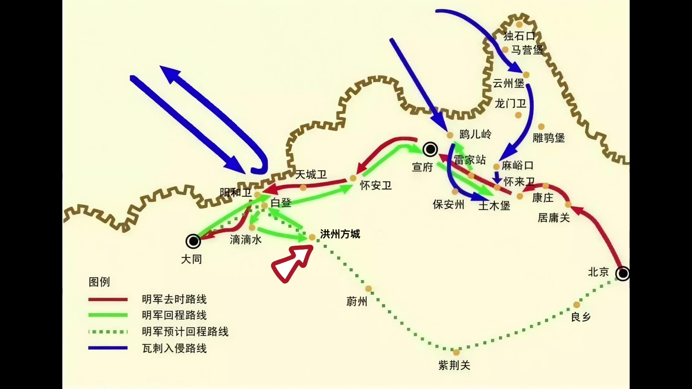
走南線走到洪州方城這個地方的時候，這太丢人了，說是御駕親征，這不行，還得再走北線跟敵人打一仗，一點也不能這麼灰溜溜就跑回去了。所以他改變心意。史書裡面記載的是王振怕踩壞莊稼才往回返。就有的學者專門進行研究，研究說在那個季節河北的莊稼地根本就什麼都沒有，根本就不怕踩。不管學者的這個研究對不對，但是王振一開始說要去光宗耀祖，後來又說要怕踩壞莊稼不讓去，這種說法實在是有點經不起推敲。但是無論是明朝人自己寫的《明英宗實錄》還是清朝人寫的《明史》都是這麼記載的。我們推測有兩種可能性：即使是皇帝犯的錯誤也不能寫皇帝犯錯，皇帝是天子不能犯錯，一定是下面的人建議有問題，這叫「為尊者諱」。這個犯錯誤的人很容易就被安在王振身上了。明朝人自己寫歷史肯定會做這種避諱。清朝人寫明朝的歷史，我們也經常看到皇帝掩飾他們幫明朝（口誤）。清朝其實並不是一味的污蔑明朝皇帝，他們也並不認為是自己推翻的明朝，他們認為自己是繼承了明朝的。所以清朝在寫明朝歷史的時候很多時候對明朝的皇帝都是嘴下留情的。所以第一種可能性是英宗選擇的路線由王振來背鍋。第二種可能性呢，就還是我們前面說的，英宗想做的事情，王振猜出來了主子的心意，由他把主子想說的話說出來。所以對外確實可能是王振自己主導的路線，但是實際上他還是猜測了英宗的意思。這種可能性也是很有可能成立的。為什麼呢？因為英宗到最後他也沒恨王振。按理說要是王振選擇路線犯了這麼大錯誤，害得他被敵人俘虜，他是不是應該恨王振？但是他並沒有。之後在後來發生「奪門之變」
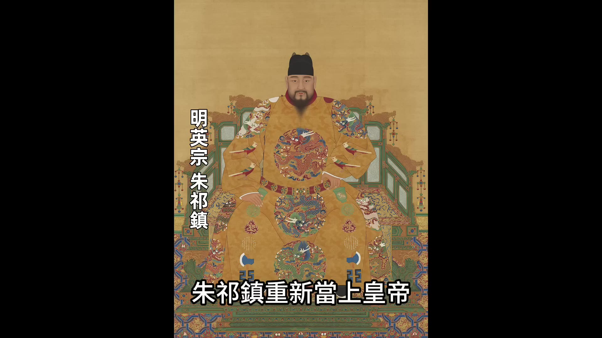
朱祁鎮重新當上皇帝，他重新當上皇帝之後為王振平反，公開頒布赦書褒獎王振，而且肯定了王振的功勞。這說明朱祁鎮從始至終沒認為王振有問題。從這點來看，即使王振主導的回程路線，他應該也是只是說出了英宗的想法而已。這是回京路線，然後我們繼續講土木堡的戰鬥。
走到宣府東南方向雷家站的時候，他們得知瓦剌大軍從後面追過來了，而且敵軍已經襲擊了明軍的後衛部隊。按照道理來說呀，得知敵軍追上來之後，英宗是不是應該加速往北京跑？跑回北京就安全了。但是我們看英宗的行動好像並不是。
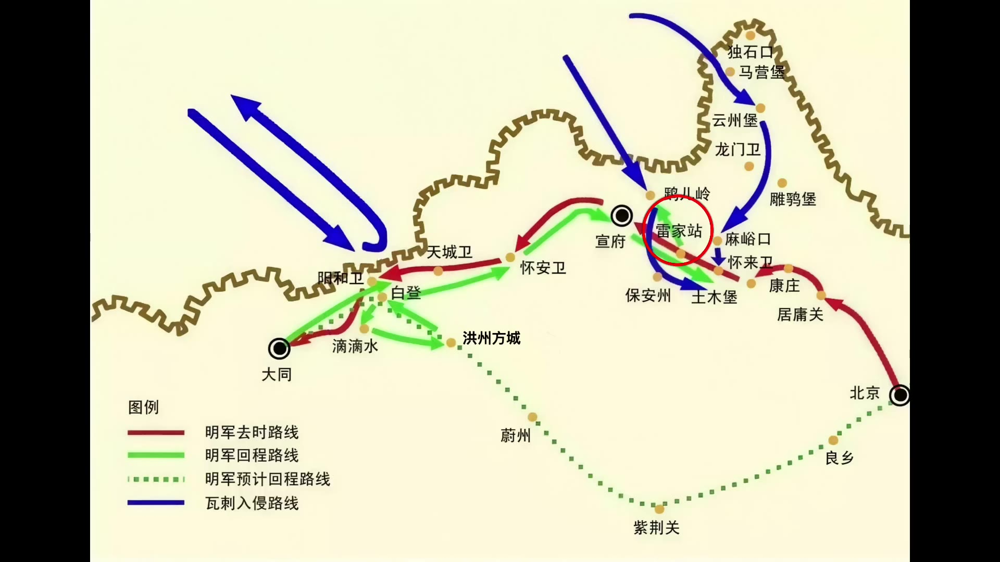
他得知敵軍追上來的時候是8月13號。得到消息之後。然後第二個命令是他安排斷後的部隊。他並沒有走瓦剌入路线。瓦剌入路线要是他想逃跑呀，還得加速走。英宗派出的斷後部隊是先後派了兩支部隊，第一支是恭順侯吳克忠率領的精銳部隊。
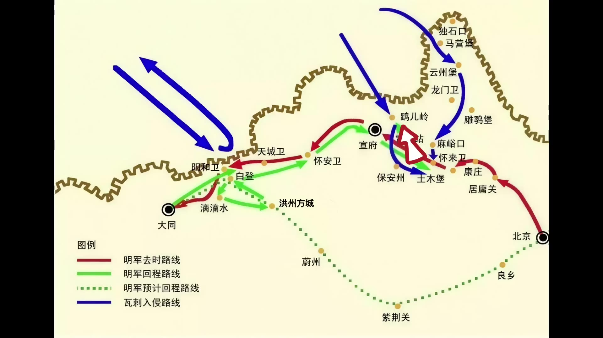
這支部隊跟瓦剌軍在鷂兒嶺發生戰鬥，吳克忠陣亡一。然後英宗又派出第二支支援部隊。
00:30:02
他們趕到鷂兒嶺去增援第一支部隊，戰鬥結果是朱勇和薛綬也都兵敗身亡。吳克忠、朱勇和薛綬這都是明軍裡面的頂級統帥，他們帶去的也都是精兵強將，他們都兵敗身亡了。這時候英宗害怕了，他不敢再等著跟敵軍決戰了，第二天8月14號早晨他立刻開拔往北京跑。
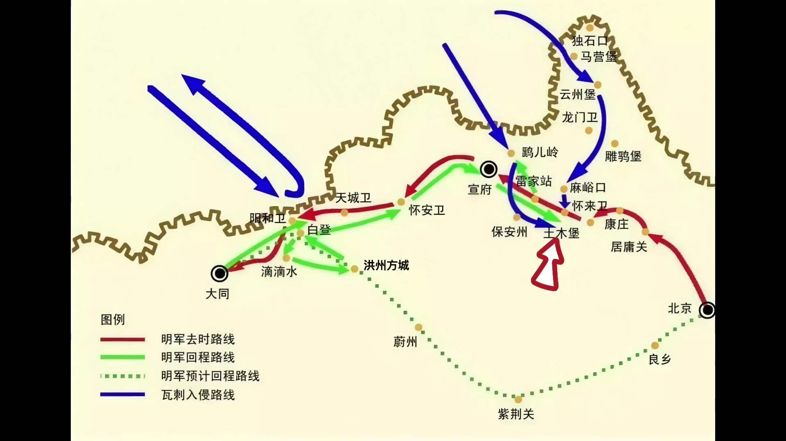
被瓦剌軍追上，如果正常打的話，明軍人數是遠遠高於瓦剌軍的。明軍的人數我們之前說過，出發的時候應該是在20萬到25萬人，前一天鷂兒嶺的戰役，英宗派出兩支斷後的部隊全軍覆沒了，這兩支部隊應該是5萬人左右。所以在土木堡明軍的人數應該還有15萬到20萬人。瓦剌軍的人數具體是多少，史書裡面沒有寫，但是專家根據很多側面的證據分析，分析出來瓦剌軍的人數應該是在3萬人左右。3萬人對15-20萬人，明軍有明顯的人數優勢。
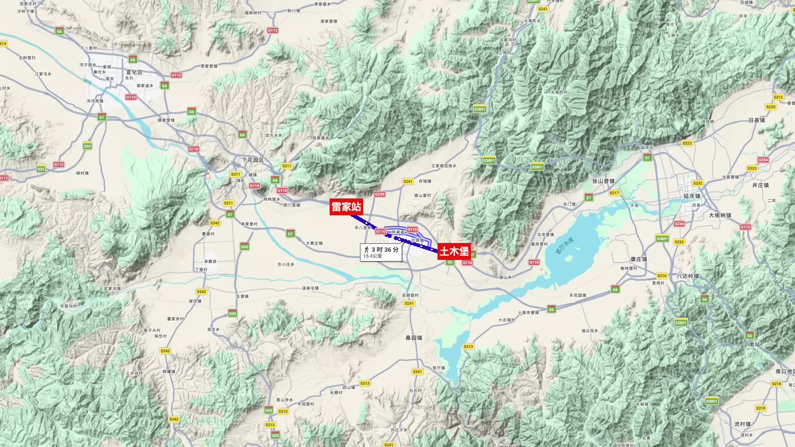
不過瓦剌軍也有優勢，瓦剌軍都是騎軍，我們看雷家站到土木堡這塊的地形非常適合騎軍發揮。不過最終戰鬥的結果是明軍慘敗。按照史書的記載，明軍失敗的原因是因為缺水。明軍紮營的土木堡這個地方是個高地沒有水源，明軍在營地裡面挖掘兩丈多都沒挖出水來。在土木堡南面十五里的地方有一條河流，但是這條河流已經被瓦剌軍給佔領了。瓦剌軍兵分多路包抄已經把明軍給圍住了，其中就有一路部隊佔領了水源。這樣明軍渴了兩天沒水喝，戰鬥力大為下降。然後瓦剌軍派出使者假裝跟明軍講和，麻痹明軍。講和之後瓦剌軍假裝撤退，明軍信以為真，移動大營到河邊取水。在明軍大營陣型移動陷入混亂的時候，瓦剌軍從四面八方突然發起衝鋒，結果明軍全線崩潰，發生大規模踩踏。這批最精的明軍部隊損失殆盡，跟著明軍一起殉難的還有上百名文武重臣，包括英國公張輔、兵部尚書鄺埜、戶部尚書王佐、吏部侍郎曹鼒等人。明英宗朱祁鎮本人也被瓦剌俘虜，還有王振也死了。王振的死法有一種民間傳說說王振是被護衛將軍樊忠給砸死的，這種說法是說明軍失敗，王振是罪魁禍首，明軍這邊的文武群臣都非常痛恨王振，樊忠一怒之下鐵錘把王振給砸死了。但是《明英宗實錄》裡面沒這麼寫，英宗實錄裡面寫得很簡潔，就四個字「振等皆死」，就是說王振跟英國公張輔、兵部尚書鄺埜他們一起死了。這就是土木堡之變。
今天先講到這裡，下期我們繼續講後面的故事『921-1945年的專題歷史課程』我開通了，有興趣的朋友歡迎點擊影片下方鏈接瞭解，歡迎大家點贊關注。
00:00:01
今天我們講土木堡之變土木堡之變發生在明朝的正統年間
正統年間皇帝是明英宗朱祁鎮朱祁鎮是明朝的第六個皇帝我們上期講的是明朝的第四個
皇帝仁宗和第五個皇帝宣宗仁宗和宣宗能被並稱為『仁宣之治』確實他們統治期間的政治比較清明但是還有一個很重要的原因就是從他們後面這個皇帝朱祁鎮開始明朝就走下坡路了所以相比較來說仁宣之治就顯得比較難得明朝由盛轉衰的第一個轉折點就是土木堡之變土木堡之變對明朝的影響非常大首先明朝數十萬最精銳的部隊
明朝的整個中樞系統上百名文官武將在這場戰爭中都陣亡了明英宗朱祁鎮本人也被俘虜了這場戰役之後明朝整個國家的戰略就從外向的進攻型轉向內向的保守型所以土木堡之變一般被認為是明朝由盛轉衰的第一個轉折點但這麼重要的一場戰役我們在看正史記載的時候卻感覺所有的記載好像都有點語焉不詳無論是明朝人自己寫的《明英宗實錄》還是清朝人寫的《明史》對這段歷史的記錄都有點含糊不清你要是乍一看沒問題前因後果也都有但是不能仔細琢磨越仔細琢磨越覺得有問題所以這麼多年來研究這段歷史的專家有的就完全按照正史來講一些也有的綜合考證當時的親歷者的記錄再加上自己的邏輯分析來講這些親歷者的記錄有時候還相互矛盾我們今天也是綜合看所有的記錄再加上自己的邏輯判斷嘗試把這段歷史給大家還原一下在講土木堡之變之前我們先稍微講一下明英宗朱祁鎮登基和太監王振掌權的情況
朱祁鎮9歲登基登基的時候還是個小孩不能親政
他登基之後是由他的母親張氏輔政據說太皇太后張氏很賢明
當時朝堂上還有三楊內閣三楊是朝廷元老他們盡心盡力的輔佐皇帝所以朱祁鎮沒親政之前朝堂上一切政務都是井井有條等到朱祁鎮長大成人他自己親政了朝堂上的形勢就發生變化了主要的變化是太監王振登上政治舞台勾結外臣干擾政治簡單介紹一下王振
王振入宮的時候跟一般大監就不一樣
王振不是
而且還有正式的職務職務是學官王振入宮當太監是他很有野心想出人頭地他又覺得考科舉太難他想走捷徑他走的這條捷徑就是入宮當太監當時是宣德年間宣德年間朱瞻基設立內書堂想要培養有知識有文化的太監王振就看到機會下決心入宮他入宮之後因為他本身就有讀書的基礎所以跟其他太監相比較進宮之後時間不長他就得到宣宗的賞識宣宗讓他進入東宮專門侍奉當時的太子朱祁鎮王振服侍朱祁鎮是在朱祁鎮很小的時候大概三四歲的時候王振因為當過學官他很有教育的經驗他對小朱祁鎮就又貼心又嚴厲朱祁鎮對他產生了很強的依賴心理朱祁鎮甚至都不是叫他的名字而是稱呼他為先生朱祁鎮登基之後立刻提拔王振為司禮監秉筆太監然後讓他掌管司禮監王振屬於是一步登天變成了後宮裡面權位最高的太監我們前面講仁宣之治的時候說過同禮監有代皇帝批紅的權力王振掌管司禮監皇帝又對他很依賴所以王振很容易就掌控了批紅權王振掌控批紅權之後他在宮內的地位就牢固了然後他開始培養自己在外廷的勢力王振培養外廷勢力主要是拉攏外廷的文官武將當時大臣都知道王振深受皇帝寵信所以很多大臣主動投到王振名下王振就借機籠絡比如說當時守衛居庸關的將領叫紀廣這個紀廣就主動向王振靠攏對王振大獻殷勤王振在皇帝身邊說紀廣的好話
結果紀廣得到越級提拔王振一開始還不敢大規模的勾結外臣因為當時太皇太后還在三楊閣老還在到正統七年太皇太后去世王振的膽子就變大了三楊閣老這時候年紀也大了也被他逼的退位王振就逐漸掌握了朝廷內外的主要話語權當時朝廷上的文官集團大概可以分為兩派一派是主動投入到王振門下的還有一派是反對王振的但是反對王振的勢力相對來說更弱
00:05:02
王振能掌權最主要的原因還是明英宗朱祁鎮對他的信任甚至說是對他的依賴這就是朱祁鎮親政之後朝堂上發生的變化然後到正統十四年發生了土木堡之變土木堡之變的過程我們先簡單敘述一下就是蒙古的一個部落叫瓦剌瓦剌發展壯大之後來入侵大明大明皇帝朱祁鎮御駕親征結果在土木堡這個地方被敵軍打得大敗明朝的精銳部隊損失慘重眾多的文武官員都戰死連皇帝朱祁鎮自己都被瓦剌給抓走了這就是土木堡之變接下來我們就從幾個關鍵的問題入手盡量還原一下土木堡之變的過程首先第一個問題是瓦剌為什麼要打大明這場戰爭爆發的原因是什麼
我們先說一下瓦剌是誰朱元璋建立大明的時候元朝並沒有終結元朝是退到了漠北學界一般把他們這時候的政權稱為北元北元退到漠北之後原有的中央機構瓦解基本上就回到了原始的蒙古部落的狀態
當時有三個比較大的部落在西邊的部落叫瓦剌在中間的部落叫韃靼在東邊的部落叫元良哈元良哈的人數少一點一開始也比較親明朝明朝給他們設了三個衛所四朵顏三衛在明朝初期蒙古的三個大部落裡面韃靼的實力最強他們也自稱是北元的正統朱棣五征漠北他主要打的也是韃胆當時明朝對蒙古的各個部落有一個「分而治之」的策略就是拉一個打一個讓蒙古各個部落發生內鬥明朝在最初期認為韃靼的實力最強他們就主要打擊韃靼然後拉攏和扶植瓦剌這樣韃靼被打下去了瓦剌的實力就逐漸變強了瓦剌也是連續出了三代優秀的領導人第一代領導人是馬哈木馬哈木利用朱棣打擊韃靼的機會主動向明朝稱臣他向明朝稱臣就可以加入到明朝的朝貢體系通過向明朝朝貢他獲得了大量的糧食和封賞然後他用封賞購買鐵器這樣他就迅速積累了戰鬥力瓦剌的第二代領導人是脫權在第一代積累戰功之後脫懽統一了瓦剌的各個部落然後向東擊敗了韃靼他擊敗韃靼之後由於他不是黄金家族的後裔所以他自己沒做大汗他是冊立了黃金家族的後裔脫脫不花做大汗他自己做太師實際上他就是挾天子以令諸侯脫脫不花只是個傀儡大汗他才是所有權力的掌控者第三代領導人是也先在也先時期瓦剌的實力達到巔峰他們不僅完全統一了蒙古草原還把勢力範圍向東擴張到遼東
向西觸及到中亞這時候明朝已經是正統年間跟明朝打這場土木堡之戰的就是也先這是瓦剌的崛起過程然後我們說瓦剌為什麼會來打大明根據官方正史的說法說的是由於朝貢貿易引發的糾紛我們前面說了說明朝為了拉攏瓦剌對瓦剌的朝貢放寬政策具體是怎麼放寬的政策呢就是明朝的朝貢制度有
一個准則叫「厚往薄來」厚往薄來薄是少「薄來」就是上供的東西少「厚往」厚是多『厚往」就是返還給你的東西多所以來明朝朝貢的國家都是賺錢的明朝是虧錢的各個小國來朝員的時候明朝會給予非常豐厚的獎賞這個獎賞的數量跟你朝貢使團的人數有關首先你所有來的人明朝都會給你報銷路費包括你的伙食費、交通費、住宿費都報銷明朝回賜的物品是按人頭算的就是你來多少人我給你回賜的物品就是多少份所以每個朝貢使團來的人數跟明朝的財政支出是直接掛鉤的來的人越多明朝要花的錢就越多所以明朝對每個朝貢國都有明確的人數限制其實不光有人數限制他們來的路線都有控制明朝給瓦剌最開始定的人數是50人後來明朝是為了拉攏瓦剌就給他們放寬了政策具體放寬的政策就是破例可以讓他們增加朝貢的人數增加朝貢人數就等於是在給瓦剌發錢這種破例就讓瓦剌看到了發財的機會瓦剌就越派人越多瓦剌從最開始的50人漲到200多人漲到500多人到正統十四年土木堡之變發生之前瓦剌來朝貢的實際人數已經達到了2,000人而且瓦剌還虚報他們實際上來了2,000人報的時候卻報了3,000人他們來這麼多人實際上對明朝有一種勒索的性質他們明知道明朝不想打仗自己多派人就是想從明朝得到更多的經濟好處
在《明史》裡面記載才容忍瓦剌這麼做
00:10:01
瓦剌來這麼多人對明朝來說是一筆沈重的財政負擔我們算算如果按一個朝貢國限額50人來算2,000人等於是40個朝貢國給瓦剌他一個國家發的錢等於是給40個國家發錢所以明朝的財政負擔太大實在有點承受不住了他就要控制這部分支出到正統十四年瓦剌使團來朝貢的時候王振就對瓦剌嚴格控制王振先是嚴格按照來的人數發放賞賜你瓦剌不是虚報嗎我就一個一個人去查實際只到2,000人我就只按照2,000人來發瓦剌使團以前肯定也有虚報的情況但是明朝都是睜一眼閉一眼沒嚴查這次王振是絲毫沒留情面嚴格按照實到人數發賞賜王振嚴查瓦剌帶來的貢品瓦剌來上貢帶來的主要是馬匹壬振發現他們以次充好以次馬充好馬所以只給了以前1/5的賞賜這樣也先就非常生氣也先認為自己既丟了面子又丟了裡子丟面子是你對我嚴查絲毫不給我留情面丟裡子是明朝給的賞賜變少了這是一大筆經濟虧空所以也先發兵大規模入侵明朝這是正史裡面記載的戰爭爆發的原因這裡面說的主要原因是在一開始瓦剌增加使團人數的時候王振為了粉飾太平對瓦剌的態度是以籠絡為主對方要什麼他就給什麼導致瓦剌的胃口不斷膨脹要的越來越多到明朝經濟壓力實在承受不住突然間削減給瓦剌的賞賜這種極端的轉變激怒了也先導致戰爭爆發
但是這個事件呀我們說如果作為戰爭的導火索還可以不應該說作為戰爭爆發的主要原因戰爭爆發的主要原因還是因為瓦剌部落發展壯大到正統十四年的時候
也先已經完全統一了蒙古草原他對中原的明朝有明顯的野心為什麼說他對明朝已經顯示出野心因為在這之前在正統十四年之前也先已經做了幾件事情
第—件事情是在西北方向他進攻並且控制了哈密衛哈密衛是明朝在最西端的衛所是連接中原和西域的咽喉控制了哈密衛就等於瓦解了明朝在西北方向的藩屏體系第二件事情是在東北方向瓦剌通過武力試圖逼迫女真的各個部落順從自己當時明朝在遼東地區設置了很多衛所比如說建州衛、海西衛等等明朝設這些衛所一方面是為了控制女真部落另外一方面也是通過女真部落來限制蒙古部落的發展瓦剌發展壯大之後他對東北這些女真部落既打壓又拉攏也先自稱他是繼承了元朝的正統要求女真各個部落念及舊恩配合他們的軍事行動這樣通過在西北方向的軍事行動和東北方向的軍事行動瓦剌對明朝已經形成了一個扇形的包圍這些都是在正統十四年之前完成的正統十四年發生朝貢糾紛的時候也先早就做好了對大明的戰略佈局所以我們說朝貢引發的糾紛可以算作是一個導火索但是戰爭爆發的實際原因還是瓦剌已經發展壯大對進犯大明有明顯的野心
也先進攻大明是在四個方向同時進攻東路是進攻遼東方向西路是進攻甘肅方向中路是進攻宣府方向最後一路是也先親自率領進攻大同方向面對瓦剌的大舉進犯明英宗朱祁鎮決定御駕親征
朱祁鎮為什麼親征根據史料記載是朱祁鎮聽從了太監王振的慫恿朝廷的文官武將等大臣多次勸阻說不要親征但是朱祁鎮都不聽朱祁鎮只聽王振一個人的最後決定要親征然後釀成了悲劇至於王振為什麼要勸朱祁鎮親征有兩種說法一種說法是說王振是為了炫耀權勢王振的老家是山西蔚州蔚州屬於大同府他率領大軍去大同打仗正好可以路過蔚州他能在家鄉光耀門楣這是第一種說法第二種說法是說王振是為了增加個人威望他現在雖然已經掌控了朝政大權但是文官集團還是能跟他對抗他認為自己差的是軍功要是他能夠輔助皇帝御駕親征並且獲勝他在資歷上和威望上就完全可以壓過文官集團這兩種說法呀都是說王振是為了自己的個人私慾慫恿皇帝親征但是我們仔細想想這個事感覺還是有點問題是不是王振為了自己的私慾去慫恿皇帝親征就算英宗一開始看不出來王振是為了私慾但是經過那麼多大臣的上奏反對英宗是不是也應該能看出來了當時的兵部尚書鄺埜吏部尚書王直等大臣都力勸英宗不要親征這些大臣的力勸都是英宗自己給壓下去的王振就算能獲得英宗的信任英宗對他比較依賴但是他也沒有達到能替英宗做決定的程度
00:15:01
尤其是御駕親征這麼大的事決定肯定是英宗自己做的我們想是不是還有一種可能就是英宗他自己想要御駕親征英宗想效仿他的祖先建立武功王振揣摩到了主子的心理王振是最有可能揣摩明白英宗心理的人他揣摩到主子想親征的心理替主子把話說出來甚至他以這個跟文官集團對抗表達對皇帝的忠心最終的結果是在王振的堅持下英宗達成了親征的心願雖然文官集團反對但是王振贏了這一局我們這個說法不是單純的猜測在《明英宗實錄》裡面有一些蛛絲馬跡可尋英宗實錄是以月為單位每個月是一卷然後一卷裡面記錄的是這個月每天發生的什麼事情我們就去查查從瓦剌發動戰爭到明英宗決定御駕親征這中間發生了什麼我們看在正統十四年6月17號這—天明朝往大同方向派出了一個將領派的是西寧侯宋瑛派的原因是朝廷探聽到了瓦剌要密謀犯大同宋瑛被任命為大同司馬他的任務是在大同做防禦部署我們看到這個說明明朝的信息很准瓦剌的主力部隊目標確實是大同然後在6月30號的時候左順門開晚朝開晚朝就是皇帝召集大臣們加班議事皇帝召集大臣加班商議的肯定是重要的緊急的事這次加班大家討論的結果是要派兵增援大同和宣府一共往這兩個地方派出了4萬5千人其中3萬兵力到大同1萬5千兵力到宣府這說明明朝已經掌握了
瓦剌部隊的入侵方向然後在7月11號也先率領瓦剌部隊進攻大同大同右參將吳浩率領明軍在大同外部的貓兒莊一帶跟瓦剌軍交戰結果明軍戰敗吳浩戰死也先進攻大同的同時瓦剌的另外一支部隊進攻宣府宣府雖然守住了但是也被打得很慘只能憑城固守7月12號消息傳回北京明英宗就是在12號這天做的決定要御駕親征我們看這個時間線和過程明朝知道瓦剌大軍要來襲擊並且已經增派了兵將去防守大同和宣府結果還是打輸了轉折點就在7月11號的這次失敗可以想象在做了充分的準備之後還是打了敗仗打了敗仗之後明英宗明顯生氣了他認為你們不行我親自來英宗也想像他太爺爺朱棣那樣御駕親征英宗想御駕親征14號在上朝的時候大臣們集體勸過他一次勸他不要去結果英宗不聽決定要去出發時間定在16號所以有人說英宗御駕親征是只給了兩天準備時間有人說給了四天準備時間其實這兩種說法都對說給四天的是從12號開始算因為12號英宗就說了要御駕親征說給兩天的是從14號開始算14號大臣們勸英宗被駁回了所以從14號算就是兩天總之不管是兩天還是四天吧反正準備的時間很短出發的很倉促大軍只帶了一個月的糧草就出發了英宗御駕親征不僅帶上了大明最精銳的部隊文臣武將都帶上了為什麼要帶這麼多文臣按理說出征打仗帶武將是應該的
為什麼會帶文臣因為明成祖朱棣親征的時候就帶了一整套文臣班底因為朱棣總親征他帶文官是為了可以流動辦公在親征的時候也可以辦理政務所以英宗出征他也學他太爺爺把文官集團都帶上了至於明英宗帶的軍隊數量是多少有說是50萬的大部分專家考證認可的數字應該是在20萬到25萬之間不管具體數字是多少這批部隊是明朝最精銳的部隊這是肯定毫無疑問的7月26號這天英宗帶著大明的中樞系統帶著大明的精銳部隊浩浩蕩蕩御駕親征出發了
我們看英宗的行軍路線
然後到懷來從宣府到大同他是在找敵人“他帶大軍出來是找敵人打仗的英宗先到宣府.又走到大同開始往回返
為什麼往回返《明英宗實錄》裡面記載的是到大同之後鎮守大同的太監郭敬密告王振說敵人在北面佈置了埋伏再往北走就中敵人的好計了王振聽到之後感到恐懼於是就班師回朝了這裡我們就分析一下英宗是不是聽了郭敬的話害怕了就回去了自從英宗御駕親征出了北京之後一直都有大臣在勸英宗回去我們從記錄裡面能看到
.英宗大軍是7月16號從北京出發的
00:20:00
7月19號過居庸關過居庸關的時候.
就是說瓦剌入侵路线但是英宗不聽7月23號到達宣府的時候
都是風雨交加到宣府之後-這時候欽天監的主管彭德清以天象英宗還是沒聽英宗汝聽
這是一路上群臣都去勸英宗英宗不聽的過程雖然天氣還是不好但肯定不是天氣的原因使得英宗往回走那是不是太監郭敬說前方有敵人佈置的埋伏英宗就害怕後退了呢按照常理來說應該不是首先英宗御駕親征出來他就是為了找敵人打仗的這一路都沒找到敵人在這找到敵人了應該高興才是至於說前方有敵人的埋伏既然知道了是埋伏那就不算是埋伏了想辦法偵探敵人是怎麼埋伏的破壞掉敵人的埋伏就好了甚至都還可以將計就計反過來引誘敵人所以因為前方有敵人的埋伏就後退了這點聽起來像是個理由但是仔細想想好像又不是那麼回事不過《明英宗實錄》裡面有一句話我們需要仔細琢磨一下「恐懼」就是王振感到於是提議班師回朝玊振感到恐懼應該就是英宗感到恐懼按照我們前面的分析王振應該是能夠體會到主子的心意應該是他體會到了英宗感到恐懼所以他建議班師回朝那是什麼讓英宗恐懼呢我們看記錄
7月15號的時候在陽和衛這個地方發生了一場戰鬥7月15號是英宗他們出發的前一天一需英宗是7月16號從北京出發的
瓦剌入侵路兩個金將是西寧侯宋瑛和武進伯朱冕
然後6月30號
明軍預計回程一而且大監郭敬是親身經歷這場戰鬥的可以想象：他在給王振或者給英宗彙報的時候
還有啊他從宣府到大同明軍預計回程路红路過陽和衛.戰場上屍橫遍野是不是也可能會增加英宗的恐懼心理英宗畢竟沒真的上過戰場這是他人生第一次出征看到戰場上的慘烈情況產生恐懼心理也很正常所以一路上無論大臣怎麼勸諫英宗都不回頭但是走到陽和走到大同看到戰場上的恐怖情況他就同意回去這是有可能的還有一點就是我們說過他帶的是一個月的糧草他從北京出發的時候是7月16號到大同的時候是8月1號剛好是半個月要是再算上返程還需要半個月的時間所以一個月的糧草剛剛好夠他行駛到大同的所以是不是也有可能英宗出發的目的地就是大同最遠就走到大同碰不到敵人就往回走這也有可能所以英宗返回的原因我們說出來的有三種一個是按照史料的記載鎮守大同的太監郭敬報告前方有敵人的埋伏再往前走就危險了所以英宗聽勸回去了第二個是我們推測的英宗看到了真實的戰場感覺到確實很恐怖產生了恐懼心理所以回去了第三個是他一開始預計的就是走到大同然後往回返因為他帶的糧草只夠到大同的不管是什麼原因他同意往回返吧英宗是走到大同沒跟敵人交戰直接就返回了下一個問題我們說英宗的回京路線
…出我們看英宗回京走的這條路線是不是有點「迷之路線』的感覺繞來繞去的.從太同回北京有兩條路線可以走一條是北線沿著外長城走
從良鄉回北京英宗走的路線然後轉向走南線又折回來走北線
按照史書的記載就是英宗走的這條路線是繞來繞去的耽誤了時間
00:25:00
最後導致在土木堡被敵人給追上所以回城的路線的選擇是要為土木堡之戰負主要責任的這個責任誰來負按照史料裡面的記載是王振來負的記載根據《明英宗實錄》是主振主導選擇的回程路線
要是走南線正好可以路過蔚州.路過蔚州瓦剌入侵路线在家鄉炫耀
最後就走出來了這條先南後北的路線史書裡面的這個記載呀是把責任都推到王振頭上我們不是想給王振洗白但是他這個說法看起來實在是有一些疑點重重首先王振因為要衣錦還鄉選擇走南線就不太正常說走南線是為了更安全反倒更合理一點
但是英宗還不是一開始就往南走
才轉向走的南線所以我們可以推測可能是英宗在陽和衛看到了什麼或者聽到了什麼增加了他的恐懼導致他選擇了走更安全的南線那陽和衛有什麼陽和衛有的只能是屍體我們前面說了瓦剌軍和明軍在陽和衛打了一場大仗明軍死傷慘重所以英宗很可能是又看到了戰敗的地方看到了戰場的慘狀
決定改道走更安全的南線
-走南線走到洪州方城這個地方的時候這太丢人了說是御駕親征
這不行還得再走北線跟敵人打一仗—點也不能這麼灰溜溜就跑回去了所以他改變心意史書裡面記載的是王振怕踩壞莊稼才往回返就有的學者專門進行研究研究說在那個季節河北的莊稼地根本就什麼都沒有根本就不怕踩不管學者的這個研究對不對但是王振一開始說要去光宗耀祖後來又說要怕踩壞莊稼不讓去這種說法實在是有點經不起推敲但是無論是明朝人自己寫的《明英宗實錄》還是清朝人寫的《明史》都是這麼記載的我們推測有兩種可能性即使是皇帝犯的錯誤也不能寫皇帝犯錯皇帝是天子不能犯錯一定是下面的人建議有問題這叫「為尊者諱」這個犯錯誤的人很容易就被安在王振身上了明朝人自己寫歷史肯定會做這種避諱清朝人寫明朝的歷史我們也經常看到皇帝掩飾他們幫明朝（口誤）清朝其實並不是一味的污蔑明朝皇帝他們也並不認為是自己推翻的明朝他們認為自己是繼承了明朝的所以清朝在寫明朝歷史的時候很多時候對明朝的皇帝都是嘴下留情的所以第一種可能性是英宗選擇的路線由王振來背鍋第二種可能性呢就還是我們前面說的英宗想做的事情王振猜出來了主子的心意由他把主子想說的話說出來所以對外確實可能是王振自己主導的路線但是實際上他還是猜測了英宗的意思這種可能性也是很有可能成立的為什麼呢因為英宗到最後他也沒恨王振
按理說要是至振選擇路線犯了這麼大錯誤害得他被敵人俘虜他是不是應該恨王振但是他並沒有之後在後來發生「奪門之變」
朱祁鎮重新當上皇帝他重新當上皇帝之後為王振平反公開頒布赦書褒獎王振而且肯定了王振的功勞這說明朱祁鎮從始至終沒認為王振有問題從這點來看即使王振主導的回程路線他應該也是只是說出了英宗的想法而已這是回京路線然後我們繼續講土木堡的戰鬥
走到宣府東南方向雷家站的時候：他們得知瓦剌大軍從後面追過來了而且敵軍已經襲擊了明軍的後衛部隊按照道理來說呀得知敵軍追上來之後英宗是不是應該加速往北京跑跑回北京就安全了但是我們看應宗的行動好像並不是
他得知敵厙追上來的時候是8月13號
得到消息之後.
然後第二個命令他是安排斷後的部隊他並沒有走瓦剌入路线瓦剌入路线要是他想逃跑呀.
還得加速走
英宗派出的斷後部隊是先後派了兩支部隊第一支是恭順侯吳克忠率領的精銳部隊
這支部隊跟瓦剌軍在鷂兒嶺發生戰鬥吳克忠陣亡一 然後英宗叉派出第二支支援部隊
00:30:02
他們趕到鷂兒嶺去增援第一支部隊•戰鬥結果是朱勇和薛綬也都兵敗身亡吳克忠、朱勇和薛綬這都是明軍裡面的頂級統帥他們帶去的也都是精兵強將他們都兵敗身亡了這時候英宗害怕了他不敢再等著跟敵軍決戰了第二天8月14號早晨他立刻開拔往北京跑
被瓦剌軍追上如果正常打的話明軍人數是遠遠高於瓦剌軍的明軍的人數我們之前說過出發的時候應該是在20萬到25萬人前一天鷂兒嶺的戰役英宗派出兩支斷後的部隊全軍覆沒了這兩支部隊應該是5萬人左有所以在土木堡明軍的人數應該還有15萬到20萬人瓦剌軍的人數具體是多少史書裡面沒有寫但是專家根據很多側面的證據分析分析出來瓦剌軍的人數應該是在3萬人左右3萬人對15-20萬人明軍有明顯的人數優勢
不過瓦剌軍也有優勢瓦剌軍都是騎軍我們看雷家站到土木堡這塊的地形非常適合騎軍發揮不過最終戰鬥的結果是明軍慘敗按照史書的記載明軍失敗的原因是因為缺水明軍紮營的土木堡這個地方是個高地沒有水源明軍在營地裡面挖掘兩丈多都沒挖出水來在土木堡南面十五里的地方有一條河流但是這條河流已經被瓦剌軍給佔領了瓦剌軍兵分多路包抄已經把明軍給圍住了其中就有一路部隊佔領了水源這樣明軍渴了兩天沒水喝戰鬥力大為下降然後瓦剌軍派出使者假裝跟明軍講和麻痹明軍講和之後瓦剌軍假裝撤退明軍信以為真移動大營到河邊取水在明軍大營陣型移動陷入混亂的時候瓦剌軍從四面八方突然發起衝鋒結果明軍全線崩潰發生大規模踩踏這批最精的明軍部隊損失殆盡跟著明軍一起殉難的還有上百名文武重臣包括英國公張輔、兵部尚書鄺埜戶部尚書王佐、吏部侍郎曹鼒等人明英宗朱祁鎮本人也被瓦剌俘虜還有王振也死了王振的死法有一種民間傳說說王振是被護衛將軍樊忠給砸死的這種說法是說明軍失敗王振是罪魁禍首明軍這邊的文武群臣都非常痛恨王振樊忠一怒之下鐵錘把王振給砸死了但是《明英宗實錄》裡面沒這麼寫英宗實錄裡面寫得很簡潔就四個字「振等皆死」就是說王振跟英國公張輔兵部尚書鄺埜他們一起死了這就是土木堡之變
今天先講到這裡下期我們繼續講後面的故事『921-1945年的專題歷史課程」我開通了有興趣的朋友歡迎點擊影片下方鏈接瞭解歡迎大家點贊關注
已核實
西寧侯宋瑛確有其人，世襲西寧侯爵位 — 明實錄・仁宗卷六上・洪熙元年正月5日（段13210）：「以罪削爵並奪其所授誥券，命駙馬都尉宋瑛襲封西寧候」；宣宗卷三十九・宣德三年三月1日（段14312）：「命駙馬都尉西寧侯宋瑛……為正副」——宋瑛的西寧侯身分與駙馬都尉（皇室女婿）身分於仁宗、宣宗兩朝實錄均有連續記載，確為實有其人、實有其爵。✅
陽和口為明代大同邊防線上的實際地名，且確為正統十四年（土木之變當年）行軍路線上的地點 — 明實錄・英宗卷一百八十四・正統十四年十月22日（段21404，附錄，即英宗被俘後的記載）：「是日虜眾奉上皇車駕次陽和口」——確認陽和口在土木之變當年（正統十四年，1449）確實是行軍/移動路線上的實際地點，與影片描述明軍行經此地的地理脈絡相符。✅（影片用詞「陽和衛」與實錄「陽和口」用字不同——衛為駐軍衛所、口為山隘關口，兩者是否指同一地點的不同稱法，或為鄰近但不同的兩處，本次未進一步考證，暫列為已核實地名存在，不核實兩詞是否完全同指。）
未能獨立核實
- 王振主導選擇回程路線一事：影片本身即引用《明英宗實錄》為出處，本次未逐卷翻閱正統十四年七、八月間的完整記載以核對此一具體歸責是否確如影片所述- 西寧侯宋瑛、武進伯朱冕於陽和衛之戰陣亡的確切戰況記載- 英宗七月十六日出發、七月十九日過居庸關、七月廿三日抵宣府、八月一日抵大同的完整行軍時間表- 王振故里「山西蔚州」的確切出身記載